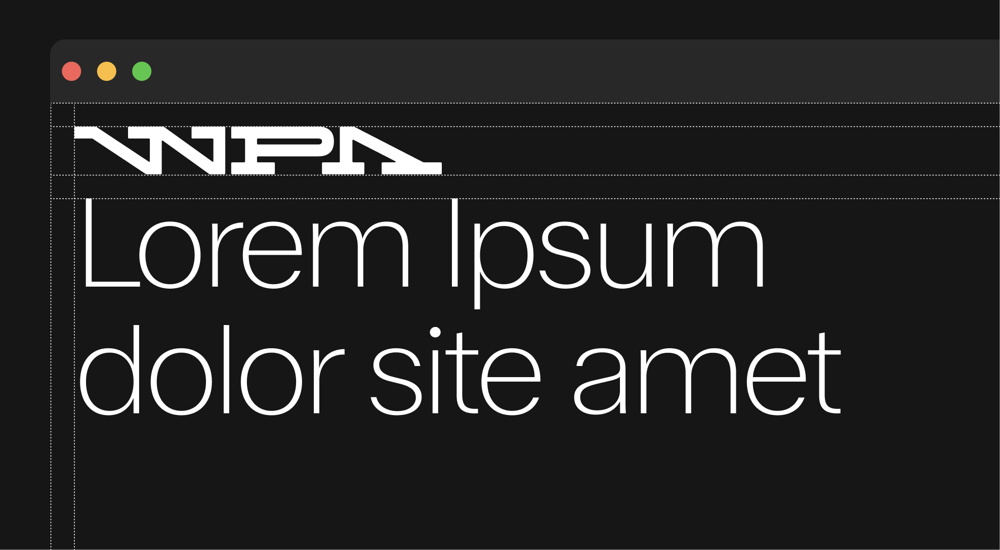

Logos
The WPA logo is the cornerstone of our visual identity. It represents our history, our ambition, and our role as the home of padel — both in the UAE and worldwide. These guidelines define how the logo should appear in every context, ensuring it remains clear, consistent, and instantly recognizable.
From display logos to wordmarks and partner lock-ups, this section provides the rules and best practices that protect the integrity of the WPA brand. Use these standards to keep every application precise, professional, and unmistakably WPA.
2.1. Display Logo
Standard
The WPA wordmark is an ode to the original Mécane logo, carrying forward its legacy while adopting a more contemporary and dynamic structure. The sharpness of the letterforms preserves the brand’s precision and authority, while the subtle rounded details on the serifs introduce a layer of sensitivity—reflecting the Academy's nurturing role and positioning WPA as a leader in sport.

Clearspace Guidelines
When applying the WPA display logo, it is paramount that it retains clarity and presence. To achieve this, the logo must always be surrounded by sufficient clear space, free from any competing elements. This protective area ensures legibility and consistency across applications. The minimum clear space is defined as 50% of the logo’s height, adapting proportionally as the mark scales. Exceptions may apply in specific lock-up configurations.

Clearspace Web & Tablet
On web and tablet applications, the logo must maintain a minimum clear space of 31px above and below. This spacing should always align with the page margins and may be adjusted as needed to follow web and mobile design requirements.
Logo Orientation
Horizontal (Standard) This is the primary and preferred logo orientation. Always use this version whenever possible. Vertical (Not Allowed) Do not rotate or tilt the logo vertically. The mark must always maintain its horizontal orientation to ensure consistency and readability.